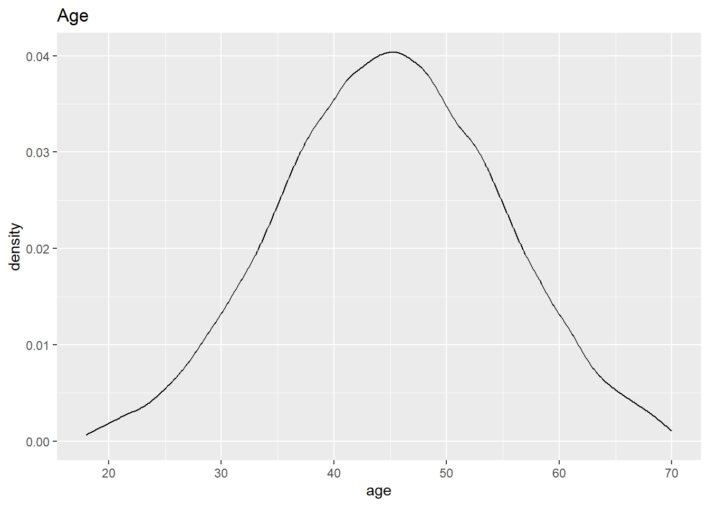
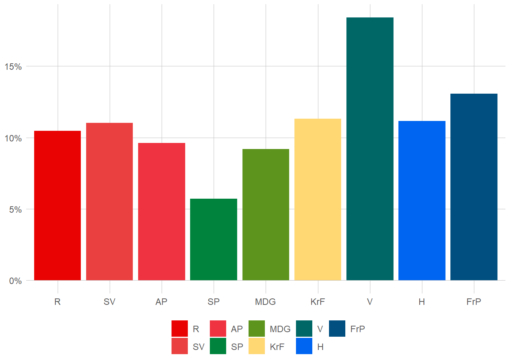
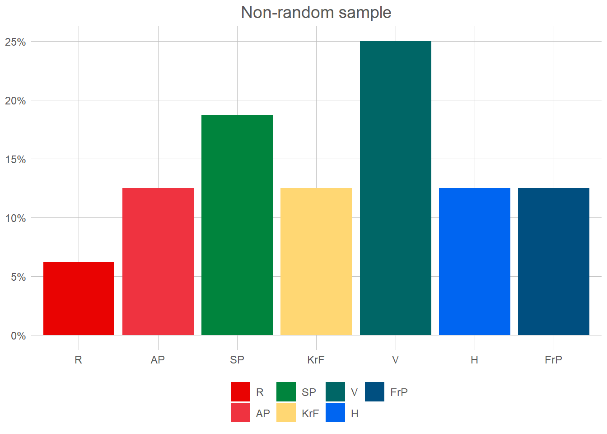

Pearson's Chi-squared test
data: valgdata$gender and valgdata$vote
X-squared = 5633.9, df = 8, p-value < 2.2e-16Statistical inference
Political Science, be it qualitative studies of the bureaucracy or playing numbers with Great Power conflicts, have on common goal: to observe, and from that understand, politics.1 To do this then (in the way we learned when discussing descriptive statistics) it should be clear that we must first observe all of the political life. If you do not know the intention of every voter, how can you attempt at predicting an election? Unfortunately as scientists we rarely, if ever, have the option of observing all that which we would like to understand. At best we may hope to see a small slice of the world, a sample, and hope that it represents that which we are hoping to understand. This idea – of going from a small sample of the world – to a knowable yet uncertain description of the real world is what we call statistical inference. In this chapter we shall look firstly at what a sample is, how we can make it representative, and finally how that can be turned into (uncertain) decisions.
A not so small world
For this chapter we will utilise some (invented) voter data to see how we can describe the world. Lets first take a look at out whole sample. In total we have 100 000 voters, from 18 to 70 year old, with roughly 50/50 men and women. Seeing all of these we can take a quick look at the true state of the world.


The data we have here is of course not unobservable. Indeed, if we choose to see out goal of prediction not as individual votes but as the election-result, this is directly and universally observable every 4th year. What we want to achieve, is to observe this also between election, usually through the use of phone-surveys and similar. This surveys attempts at creating a random sample. Lets start at non-random sample of 30 voters.
election_plot(
valgdata %>% slice_head(n = 100) %>% filter(age > 50, gender == "male"),
vote
) +
labs(title = "Non-random sample")
This shows the voting patterns of men over 50 for the first 100 rows of our data. Now, before looking more at the results here we need to go through some important rules!
Firstly, we only, only, care about the population. If someone ever says that 25 % of the sample is something, you should immediately react in horror as nobody ever cares about the sample. Actually, if you write about what happens in the sample this is now your whole population and you have observed all of it! Congratulations, you are no longer uncertain about anything and can just state the correct answer. You no longer need statistics.
Secondly, you should always give an answer.2 That answer of course should be based on the data you have available, and the best you can make from it. Sometimes you may say to yourself: “Well this is awful data! I only have men over 50, and not even a percent of them! Certainly I’m so uncertain I couldn’t say whether they vote at all!” Well that’s horribly unfortunate. Luckily, statistics gives us the tools to say how uncertain we are.
Lets look back at our sample. How many people (in Norway, not in our sample) do we believe vote for the Liberals (V)? Well, the number says 25 % so that’s our answer. Now, is that correct? In other words, if we had access to the whole sample, is this what we should expect? Seems highly unlikely. Ok, so how uncertain are we about our results then? Ok, don’t hate me, but I lied. Sort of, in this sample we aren’t able to say how uncertain we are3. Here we will look at two simple rules to get a good sample. Firstly, the law of large numbers, and secondly an i.i.d. randoms ample.
Law of Large Numbers
Footnotes
Define that as you self please.↩︎
At least in this course that is. In reality the uncertainty may get so high that “I ain’t got the slightest clue” may be a reasonable answer.↩︎
Ok, so that’s a lie to. There are ways to find the uncertainty on non-random samples. The people over at the mathematics faculty are probably more than willing to explain it to you.↩︎